Titan · Phase 2 wreck fitting reviewTitan’s Rest · posed and fitted
Phase 2 review of the approved titan on the fixed road, before Phase 3 damage and weathering.
All production geometry is shown. The road and white Z = 0 sand plane are review context and are not exported. Material colours are the ten named production slots, lit for inspection. Clearance and seating measurements are recorded separately in the production reports.
The fallen titan
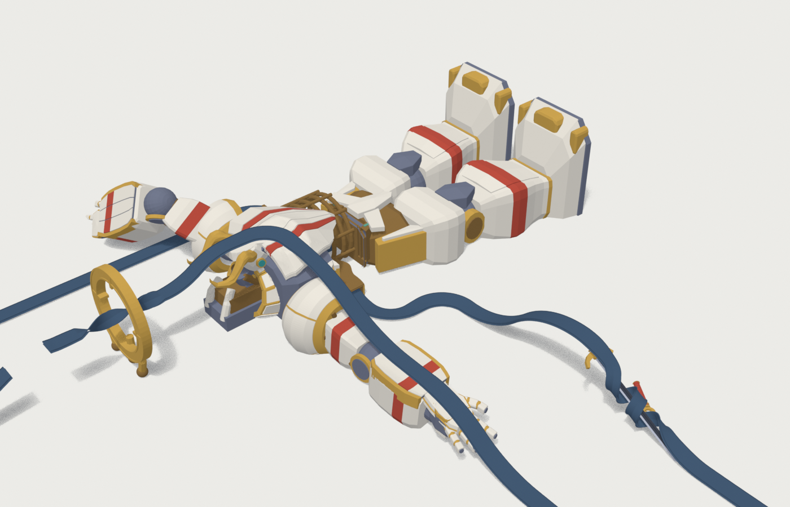
Full wreck on the unchanged road. White review sand marks Z = 0; buried geometry is intentionally occluded.
Palm · fingertips to wrist
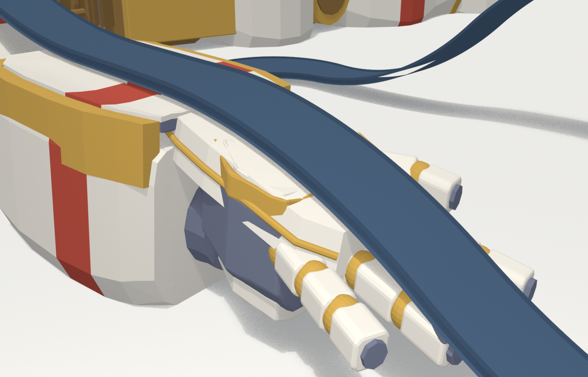
Approach over the open right hand. Inspect the road support across its full width.
Arm and shoulder
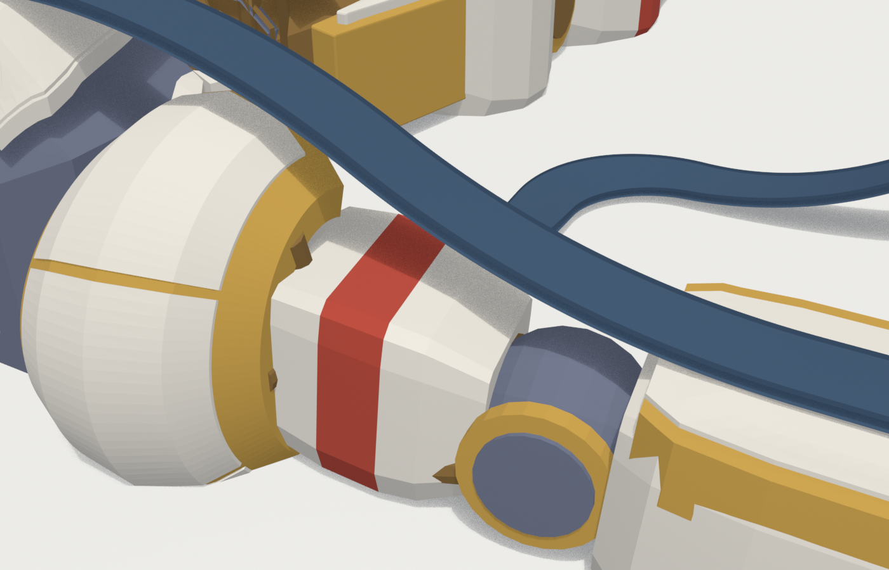
Forearm seating and the approved pylon-supported climb above the upper arm.
Brow · face and propped head
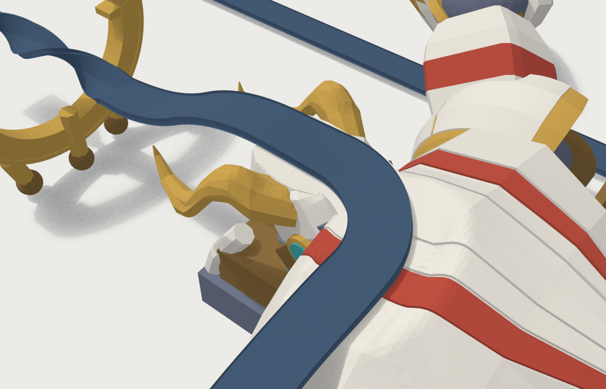
Face, chin and forehead beneath the road, with the broken-neck supports below.
Collar and chin
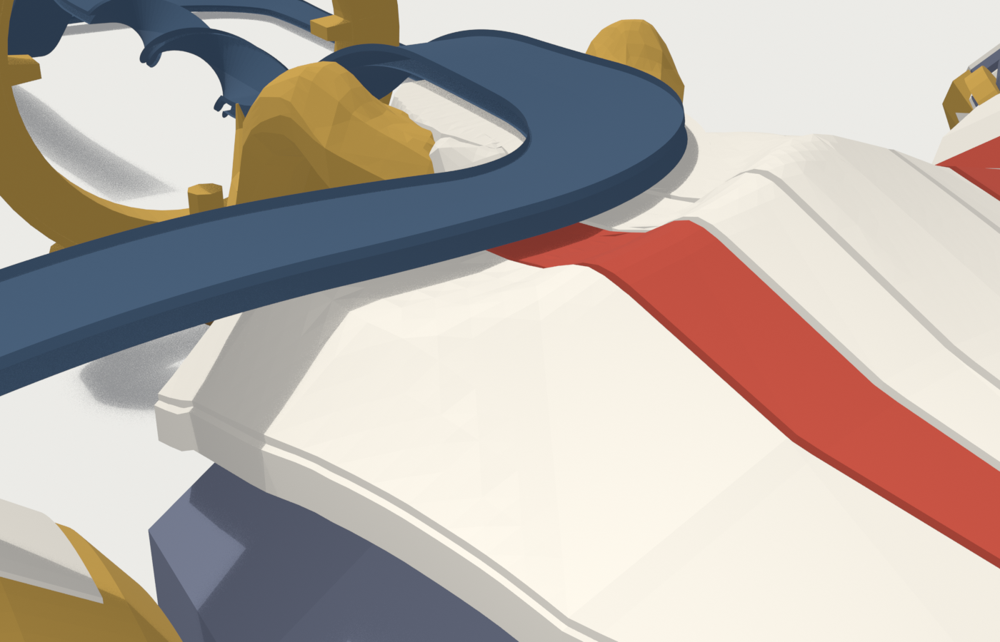
Transition from the chest to the lifted head; collar plates and frame remain visible.
Halo · full roll
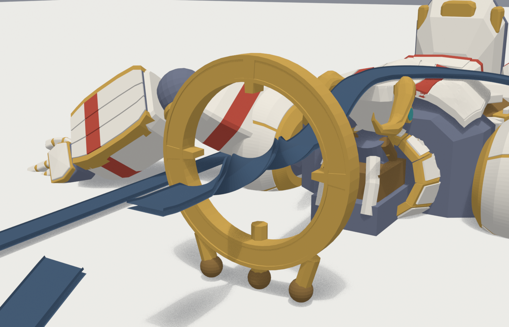
Detached halo standing beyond the crown. The road rolls through the opening.
Breach · north flank entrance
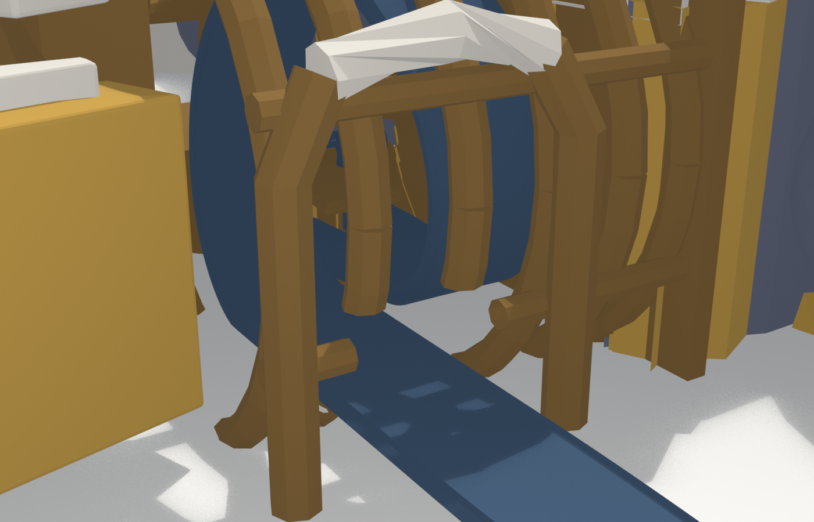
The northern wound, seen from outside along the approach into the chest.
Ribcage · chamber overview
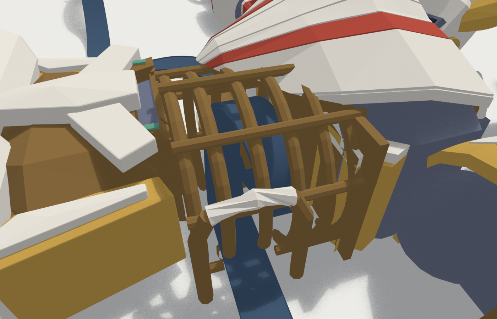
The northern chest opening, bronze ribs and frame surrounding the loop.
Ribcage · inside the chamber
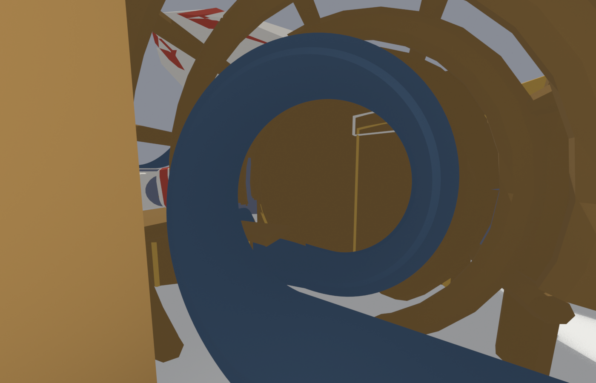
Wide view from inside the chest: the complete loop and the surrounding bronze frame.
Hull · left bronze corridor
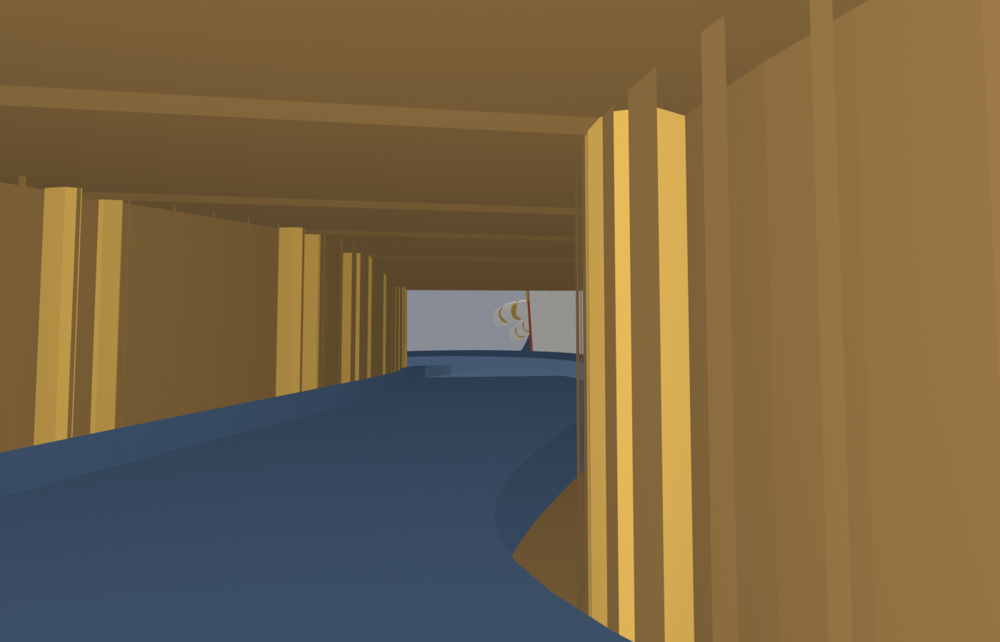
Inside the left route. Inspect the bronze walls and roof clearance over the road.
Hull · right open gallery
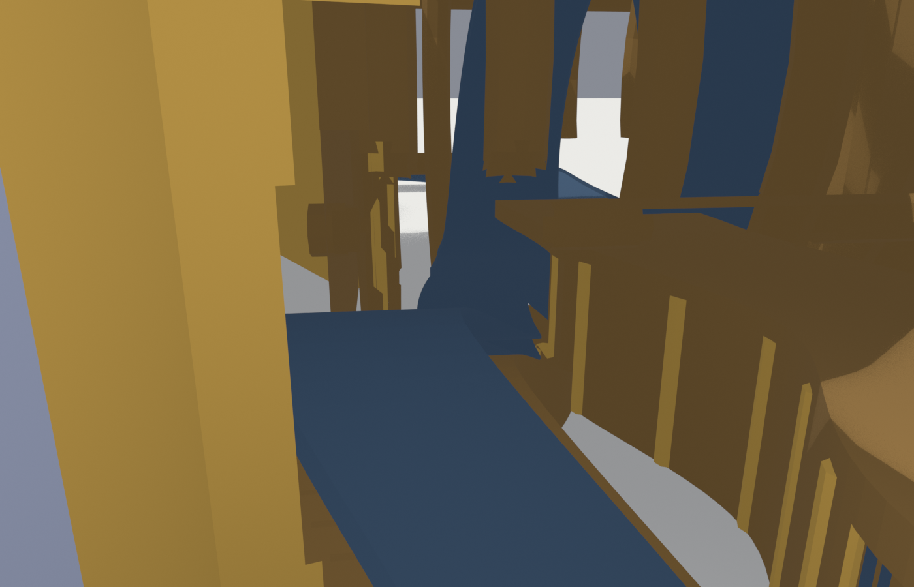
Looking back from the exit along the raised right route, beside the ribs and the left corridor roof; its outside remains open.
Exit · south flank
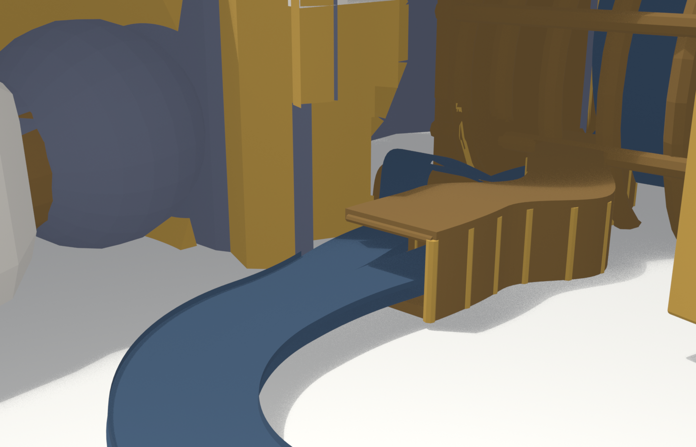
The opening where the two routes leave the southern flank.
Sword · blade, guard and broken grip
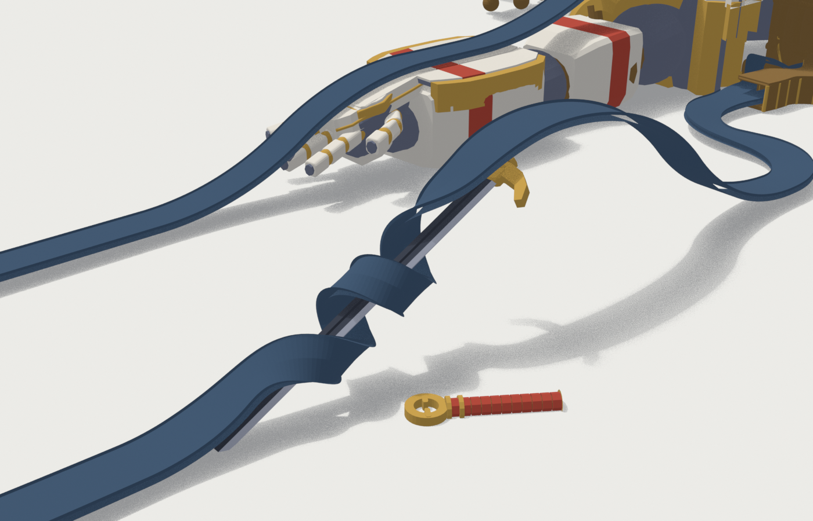
The road around the buried blade. The snapped grip and pommel rest east of it.